Next: Renumbering Up: Program structure. Previous: Contraction, Enlargement, Step and Contents
The major routine for three-dimensional Navier-Stokes Calculations (compressible and incompressible fluids) is compfluidfem.c. The flow diagram for incompressible and compressible fluids is shown in Figure 186 and 187, respectively. Right now, compfluidfem.c is called once in routine nonlingeo.c. Later on, combined fluid-structure calculations are planned.
The theory behind the fluid calculations is explained in Section
6.9.19. Incompressible fluids (liquids) are calculated using a
semi-implicit scheme (the variables compressible and explicit take the value
0), for compressible fluids (gases) an explicit scheme is used (
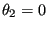
Depending on the application different systems of equations have to be solved,
corresponding to the transport equations of mass, momentum, total internal energy,
turbulent kinetic energy 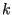 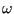
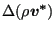
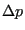
for incompressible fluids and the density time change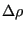
for compressible fluids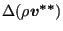
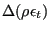
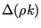
and the turbulence frequency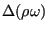
The total time change of the momentum is
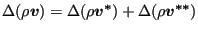 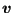 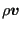
Each of the above sets leads to a linear equation system to be solved for that increment.